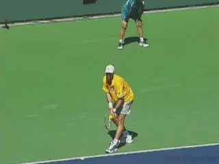
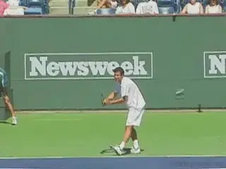
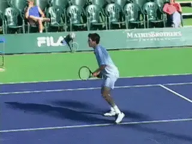
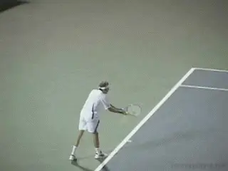
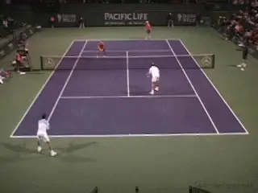
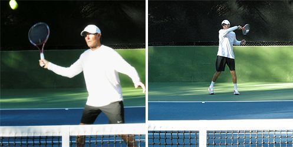
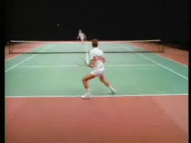
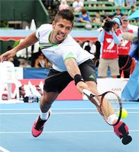
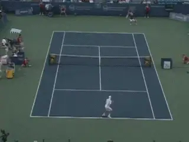

The Serve and Volley Mentality¶
Kyle LaCroix

Serve and volley: committing to a mentality.
Serve and volley in its purest form is more than just a style of play. It is a philosophy and a way of life. It's a similar to the commitment a pig makes to bacon.
Many coaches, players and fans will say that serve and volley is dead. I disagree. It may be endangered at the pro level. But it still can be a very effective strategy for the vast majority of players if, like any strategy, it's executed properly.
I also believe that it can be successful on the tour. I'm well versed in the reasons why so many "tennis experts" believe that's not true. They point to the racquet and string technology, the quality of athletes, the new levels of spin in the baseline game, the improvements in the return of serve, etc.
All these are valid points. To me however, they are often used as excuses not to embark on a difficult path.
It's always easier to make excuses than to make a commitment and an effort. In the future I think we will see a player or players emerge willing to do both.
Fundamental Differences
That said, if a player is going to develop a serve and volley game, he needs to understand the fundamental differences in the mentality. Baseline play can be a long series of hypnotic, sleep inducing rallies.

In serve and volley, the serve alone is not the star.
Serve and volley is completely different. It requires greater mental dexterity. It requires the immediate ability to understand cause and effect. It has dramatic, sudden twists and turns.
It's based on an aggression. The serve and volley player seeks to defeat his opponent by hitting immediate, decisive winners. It's a first strike mentality based on landing knock out punches, rather than fighting a war of attrition.
Because of this, playing successful serve and volley is 85% mental. The attacking mentality must be established first. But one of the biggest hurdles for a player trying to develop this style is that many coaches never played serve and volley themselves and cannot teach the real mentality.
Players practice the serve. They practice their volleys. But there isn't an understanding of how to put them together into a style of play.
Rarely have I seen a coach sit a student down and explain the needed mentality. In fact, some of the emphases in modern coaching, especially regarding the serve, actually undermine the possibility of developing it.
The Serve is Not The Star
The first component in the serve and volley mentality is realizing that the alone serve is not the star. Think of the best serve and volley players to ever play the game. Stefan Edberg, John McEnroe, Patrick Rafter, Laver, Martina Navratilova, even Pete Sampras.

The rush of a winning volley is greater the pain of being passed.
Were they the fastest servers of their eras? No. The mastery of location and spins was what lead to their success. It's true that Sampras hit a high percentage of unreturnable serves. But the heaviness of his ball and the accuracy of his placements was what set up the dominating volleys that were the core aspect of his attacking game.
Crazy as it may seem, I believe the introduction of the radar gun has been a huge detriment to serve and volley tennis. Players at all levels now wonder after a great serve how fast it was and at the professional level, the radar gun proudly displays it every time.
Competitive players will forego sound tactics, try to overpower the ball and hope someone will recognize they have a "great serve". The obsession with speed on a radar device has cutback the opportunities for players of all levels to develop spin and placement and perhaps discover their true game.
The correct mentality is that the serve sets up the next shot, the winning shot, the volley. The time you have to get to the net is directly related to the speed of your serve. The faster you hit the less time you have and the faster you have to move. So many players, especially juniors today, try to hit that serve as hard as they can, making coming in practically useless.
It's tough to win points if you have to consistently hit half volleys in no man's land off screaming topspin returns. I teach my players the serve is not some bionic ace machine that you need to crank up to full power every time.

The serve sets up the winning shot, the volley.
To me taking time to hit your shots in the service box to set up a clean volley is much more rewarding. Serve and volley should make your opponent feel rushed, not you.
A potpourri of spins, speeds and placement is the way to accomplish this. Think of your serve as an assist machine, something like a great point guard in basketball.
I often wonder how many players, both amateur and professional, that may have been even more successful at attempts to serve and volley if they just simply understood the style's dynamics. Before a ball is struck, what players should think, feel and understand with serve and volley can lay the perfect foundation for what our skills as teachers can produce on court.
Most students of all levels must understand the benefits and drawbacks of this style. These psychological approaches to serve and volley apply to both singles and doubles.
Geometry of Playing the Net
A simple fact that seems to become lost is that the closer we move to the net, the greater angles we create. Sharper angles allow players to hit into a greater percentage of the court.
That may seem simple but how many players really understand its value? Players that are new to my ladies teams that have a "baseline centric" game normally dismiss my advice of net play with the answer "I don't like it up there. It's just not my game".

In doubles as well as singles, the closer to the net the sharper the angles.
These are the same ladies that have knock down, drag out 3 hours long baseline rallies that leave them frustrated, tired and confused. Meanwhile their teammates are smiling after a win, relaxing and eating lunch.
Our team philosophy is this: "we stay in the point on the baseline, we win points at net". Typically, over the course of a season those reluctant baseline players begin to see value of venturing to the net. A player may have a negative opinion of the net, but still find that the net will reward you for a visit.
Visual Impact
A key point in playing serve and volley is how playing close to the net affects opponents, both visually and emotionally. All great champions, no matter what game style they employ, are able to impose their will.
There is no greater style to do this than serve and volley. At the net you have shrunk the court by something close to half. Note the difference in the scale comparing the baseline and the net player. At the net you can literally loom large.
I often joke with my players that the best volley is the one you never have to hit. Serve and volley applies visual pressure than can force opponents into errors. Many points in serve and volley are actually won by returner error. As Brad Gilbert says, pressure paralyzes. (Click Here.)
As a serve and volleyer, credit your style when you get these. The errors are a direct result of literally getting more in the face of the opposition.
Acceptance
A challenge that all players face when they come to the net is dealing with getting passed. It's a more discouraging event than making an error in a rally.

Notice the difference in your physical presence at the net compared to the baseline.
A fundamental aspect of the serve and volley mentality is this: You have to accept it is going to happen. You take the risk of being passed on every trip to the net.
For some players getting passed even once is so traumatic that they never venture up again. They abandon a positive mentality and tell themselves "I'd rather lose because it's too embarrassing when I get passed."
It's so vital to teach players of all ability levels how to emotionally handle the effects of a losing to a passing shot. As the coach, I need to explain to my players that one passing shot, lucky or not, by an opponent, no matter at what point in the match it occurred, should never be powerful enough to dictate the way I need to feel or continue to play.

The greatest serve and volleyers have been passed the most.
I remind them the best serve and volley players in history are the ones who were passed the most. They have been passed far more times than players just learning this style. And yet, they still kept coming in.
Many times, I have had this experience: my player approaches the net and hits a great volley. But the opponent chases it down and hits an incredible passing shot, maybe the only one of its kind they would hit in the entire match. But my player looks over and gives me the evil eye and never goes in again.
They let their opponent off the hook and gave up on their own ability. Every coach has or will eventually go through this with students.
The fact is that the cumulative pressure in matches eventually gets to players who rely on spectacular shots to win points, and this is especially true with passes. A player may make multiple passes over the course of the match, only to miss the same shots or similar shots at critical junctures.
Inevitably, you will lose a number of points when you serve and volley. But ironically, it's often those very points that take a toll on the opponent and give the serve and volleyer the edge as the match continues.
Players should understand that with each passing shot is a strategic opportunity to make adjustments and improve shot selection, and decision making. With serve and volley you have to think long-term throughout the course of the match. Not every point will go your way when you attack the net, but what matters is if in the long term, you inflict more damage on your opponent.

Go for every ball at the net and you may succeed on one that seemed impossible.
How You React
You simply cannot allow yourself to make a missed serve or a great pass by your opponent into a big deal. How you react during and after these occurrences is what makes the difference in maintaining your mentality, and usually, the outcome of the match.
After a serve miss, I like to take a one or two extra steps towards the net as if I was ready to pounce on that return on surprise, I hit a fault. I want my opponent to think that the is going to need to hit a good return. If I can plant a seed of doubt or anxiety in my opponent before the point has begun, I'm already in the driver's seat.
Another key is always making the effort for the ball, even if you are fairly certain that it's winning shot for your opponent. Don't stand there looking helpless.
Stretch, lunge, dive if you are playing on grass and are under age 20. Your opponent will see that you went for it and think maybe you were close. Serve and volley is about applying pressure and sending a message.
Just getting a racquet on a ball, sends a significant message to your opponent that you might succeed next time. And he may end up overhitting the next one. This is a mental, moral and tactical victory all in one.
It's also important to recognize that the positive rush of emotions is greater when you hit a clean volley winner than the negative feeling of being passed. A volley winner is decisive. It creates momentum. That's why players play this style.
Remember in a close 2 set match the winner usually wins only 2 to 5 more points than the loser. You have to feed off the positive and let the negatives go. This is how you sustain the serve and volley mentality.

Getting passed is an opportunity to reassess strategy.
Stamina
It's also important to note the role of stamina in the serve and volley game. Exploding forward is different than moving side to side. You need balance, controlled, efficient movement and rhythm.
Some players waste energy trying repeatedly to hit huge serves and crash through their volleys only to hit the wall towards the end of a match. Suddenly their legs feel heavy. The shoulders and arms are fatigued and don't react quickly enough. Conditioning for these types of points is different, and in a future article we'll look at drills that are specifically suited for the serve and volley game.
The proper mentality of serve and volley is the foundation to the art of serve and volley. Coaches all over the world teach their players consistent and effective serves and crisp and penetrating volleys.
But talented players with great serves and great hands often never utilize their skills because they don't understand the psychological approach for this beautiful style of play. The mentality is the foundation, and from there we can go forward to discuss the strategic aspects and how to incorporate serve and volley into your game.

Kyle LaCroix is a USPTA and PTR Certified Professional as well as receiving his United States Center For Coaching Excellence (USCCE) Certification. He has been a featured speaking at numerous Industry Conferences.
Kyle has experience working with ATP/WTA and NCAA collegiate players at each level of their competitive careers and at every stage of their professional and personal development. He is recognized throughout the industry as a reliable, hardworking, genuine presence. Kyle utilizes great people skills and is an exceptional communicator. He understands the important roles and responsibilities that federations, coaches and players carry with them on a daily basis.
He holds an MBA from the University of Michigan and a M.Ed in Educational Leadership from Stanford University